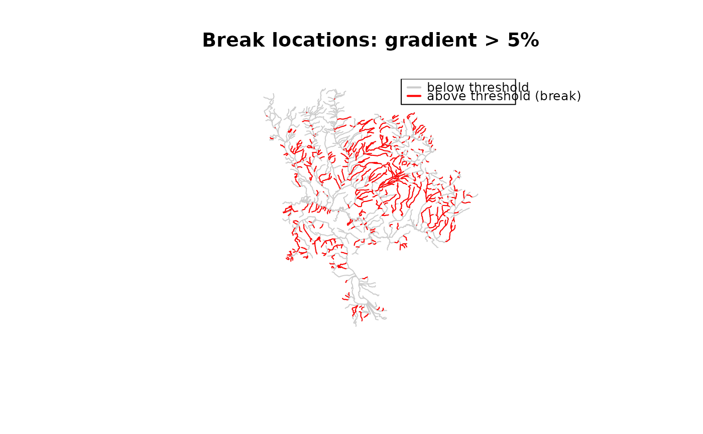

Identify break points where the stream network should be split. Supports
three modes: attribute threshold (e.g. gradient > 0.05), existing point
table (e.g. falls, dams), or user-provided sf points (snapped via
frs_point_snap()).
Usage
frs_break_find(
conn,
table,
to = "working.breaks",
attribute = NULL,
threshold = NULL,
interval = 100L,
distance = 100L,
points_table = NULL,
points = NULL,
where = NULL,
aoi = NULL,
overwrite = TRUE,
append = FALSE
)Arguments
- conn
A DBI::DBIConnection object (from
frs_db_conn()).- table
Character. Working schema table to find breaks on (from
frs_extract()).- to
Character. Destination table for break points. Default
"working.breaks".- attribute
Character or
NULL. Column name for threshold-based breaks. Currently only"gradient"is supported — usesfwa_slopealonginterval()to compute slope at fine resolution and find where it exceedsthreshold.- threshold
Numeric or
NULL. Threshold value — intervals where computedattribute > thresholdgenerate a break point.- interval
Integer. Sampling interval in metres for attribute mode. Default
100. Smaller values find more precise break locations but take longer.- distance
Integer. Upstream distance in metres over which to compute slope for attribute mode. Default
100. Should generally equalinterval.- points_table
Character or
NULL. Schema-qualified table name containing existing break points withblue_line_keyanddownstream_route_measurecolumns (e.g. falls, dams, crossings).- points
An
sfobject orNULL. User-provided points to snap to the stream network viafrs_point_snap().- where
Character or
NULL. SQL predicate to filter rows frompoints_table. Example:"barrier_ind = TRUE". Only used withpoints_tablemode.- aoi
AOI specification for filtering (passed to
.frs_resolve_aoi()). Only used withpoints_tablemode.- overwrite
Logical. If
TRUE, droptobefore creating. DefaultTRUE.- append
Logical. If
TRUE, INSERT INTO existingtotable instead of CREATE. Use to combine multiple break sources (e.g. gradient breaks + falls barriers). DefaultFALSE.
Details
All modes produce the same output shape: a table with blue_line_key and
downstream_route_measure columns, suitable for frs_break_apply().
Examples
# --- Where breaks occur (bundled data) ---
# Break points are locations where a stream attribute exceeds a threshold.
# Here: segments with gradient > 5% (potential barriers to fish passage).
d <- readRDS(system.file("extdata", "byman_ailport.rds", package = "fresh"))
streams <- d$streams
# Which segments exceed 5% gradient?
is_steep <- streams$gradient > 0.05
message(sum(is_steep, na.rm = TRUE), " of ", nrow(streams),
" segments exceed 5% gradient")
#> 546 of 2167 segments exceed 5% gradient
# Plot: steep segments (red) are where breaks would be placed
plot(sf::st_geometry(streams), col = "grey80",
main = "Break locations: gradient > 5%")
plot(sf::st_geometry(streams[which(is_steep), ]), col = "red", add = TRUE)
legend("topright", legend = c("below threshold", "above threshold (break)"),
col = c("grey80", "red"), lwd = 2, cex = 0.8)

if (FALSE) { # \dontrun{
# --- Live DB usage ---
conn <- frs_db_conn()
# Attribute mode: break where gradient exceeds 5%
conn |>
frs_extract("bcfishpass.streams_vw", "working.streams", aoi = "BULK") |>
frs_break_find("working.streams", attribute = "gradient", threshold = 0.05)
# Table mode: break at known falls locations
conn |> frs_break_find("working.streams",
points_table = "whse_basemapping.fwa_obstructions_sp")
DBI::dbDisconnect(conn)
} # }